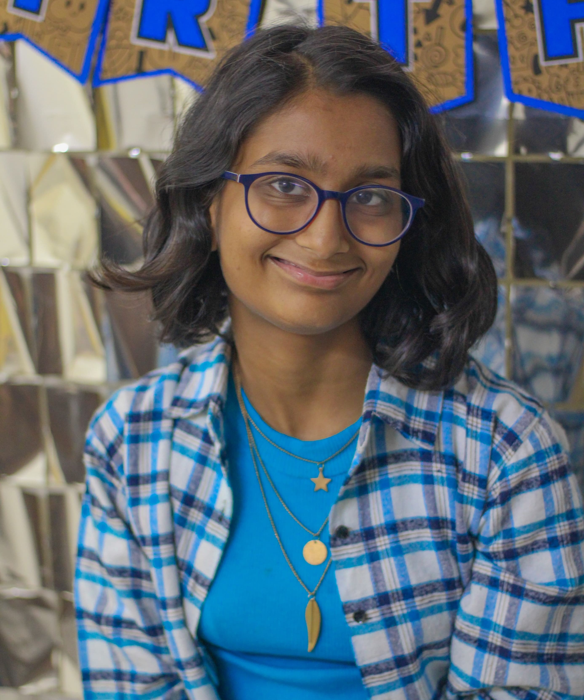

About Me

Welcome to my portfolio website! I am Sarakshi Mamodia, an 18-year-old girl currently
pursuing Computer Science Engineering at VJTI, Matunga. Coding is not just a skill for me;
it's a passion that drives me to explore new technologies and create innovative solutions.
When I'm not coding, you can find me in the kitchen, experimenting with new recipes and
flavors, or curled up with a good book, exploring different worlds through literature.
Dance is another passion of mine, as it allows me to express myself creatively and stay active.
I'm excited to share my journey and projects with you through this platform.
Education
St. Thomas School
St. Thomas School holds a special place in my heart, as it was where I spent my formative years
from 1st to 5th class. The school's sprawling campus and expansive grounds provided the perfect
environment for learning and play. The campus was so vast that it felt like a mini-town, with
separate buildings for classrooms, a library, and a playground that seemed to stretch on forever.
I have fond memories of running around the playground with my friends, playing games and enjoying
the fresh air. Even though I have moved on to new chapters in my life, I often find myself reminiscing
about my time at St. Thomas School and missing the sense of community and belonging that it provided.
Podar International School
My high school years at Podar International School were nothing short of memorable. It was a time filled
with learning, growth, and the formation of lifelong friendships. The school provided a nurturing
environment that allowed me to flourish academically and socially. I am proud to have scored 95% in my 12th
board exams, a testament to the hard work and dedication I put into my studies. Additionally, achieving a
99.05 percentile in the MHT CET exam was a moment of great pride for me, reflecting my passion for academics
nd commitment to excellence. Podar International School will always hold a special place in my heart, as it
not only prepared me for the future but also gave me cherished memories and lasting friendships.

Veermata Jijabai Technological Institute
I am currently studying Computer Science Engineering at VJTI has been an enriching experience filled with opportunities for
growth and learning. The college's vibrant atmosphere, coupled with its strong academic curriculum, has helped me develop both
personally and professionally. Participating in fests, carnivals, and events like Traditional Day has been a highlight, allowing
me to showcase my talents, interact with peers, and immerse myself in the diverse culture of VJTI. I have thoroughly enjoyed my time
here, and it has only strengthened my resolve to pursue a career as a front-end developer. The support from faculty and the
exposure to practical knowledge have been instrumental in shaping my aspirations and fueling my passion for technology.
My Skills
- Programming Languages: Proficiency in languages like Python, Java, C++.
- Data Structures and Algorithms: Understanding fundamental data structures (arrays, linked lists, trees, graphs)
and algorithms (sorting, searching, dynamic programming) is crucial for problem-solving. - Database Management: Knowledge of database systems and languages (SQL, NoSQL) for storing, retrieving, and managing data.
- Software Development: Familiarity with software development methodologies (Agile, Waterfall),
version control systems (Git), and tools for project management. - Web Development: Basic understanding of HTML, CSS, and JavaScript for web development, along with frameworks like React, Angular, or Vue.js.
- Operating Systems: Understanding of how operating systems work, including process management, memory management, and file systems.
- Problem-solving Skills: Ability to analyze problems, break them down into smaller components, and develop effective solutions.
- Communication Skills: Good communication skills, both verbal and written, to effectively convey ideas and collaborate with others.
- Critical Thinking: Ability to think critically and evaluate information to make informed decisions and solve complex problems.
- Creativity: A creative approach to problem-solving and the ability to think outside the box to develop innovative solutions.
- Continuous Learning: Willingness to continuously learn and adapt to new technologies and developments in the field.